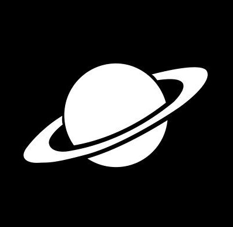
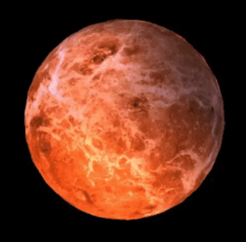
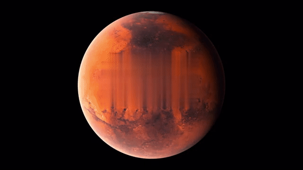
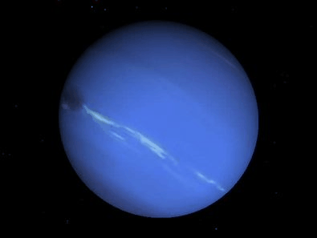

#1 MERCURY
Living up to its name, Mercury is the fastest planet in the solar system, speeding along at about 29 miles
per
second and completing each orbit around the sun in just 88 Earth days. Mercury is also the smallest planet
in
the solar system, measuring just 3,032 miles wide at its equator


#2 VENUS
Venus is the second planet from the Sun and Earth's closest planetary neighbor. Even though Mercury is
closer to the Sun, Venus is the hottest planet in our solar system. Its thick atmosphere is full of the
greenhouse gas carbon dioxide, and it has clouds of sulfuric acid.

#3 EARTH
Earth, our home planet, is a world unlike any other. The third planet from the sun, Earth is the only place
in the known universe confirmed to host life. With a radius of 3,959 miles, Earth is the fifth largest
planet in our solar system, and it's the only one known for sure to have liquid water on its surface.

#4 MARS
Mars is smaller than Earth with a diameter of 4217 miles. This makes it the second smallest planet in our
solar system. A day on Mars lasts 24 hours and 37 minutes. One year on Mars is 687 days long.

#5 JUPITER
Jupiter is the largest planet in the solar system. It is approximately 143,000 kilometers (about 89,000
miles) wide at its equator. Jupiter is so large that all of the other planets in the solar system could fit
inside it. More than 1,300 Earths would fit inside Jupiter.

#6 SATURN
Saturn is the sixth planet from the Sun and the second-largest in the Solar System, after Jupiter. It is a
gas giant with an average radius of about nine and a half times that of Earth. It only has one-eighth the
average density of Earth; however, with its larger volume, Saturn is over 95 times more massive.

#7 URANUS
Uranus is the seventh planet from the Sun, and has the third-largest diameter in our solar system. It was
the first planet found with the aid of a telescope, Uranus was discovered in 1781 by astronomer William
Herschel, although he originally thought it was either a comet or a star.

#8 NEPTUNE
Neptune is the eighth and farthest-known Solar planet from the Sun. In the Solar System, it is the
fourth-largest planet by diameter, the third-most-massive planet, and the densest giant planet. It is 17
times the mass of Earth, and slightly more massive than its near-twin Uranus.
